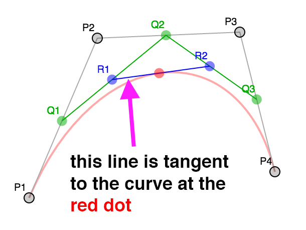

这可能是一个晦涩的话题，但是我觉得很有趣所以就写出来了。 这些东西并不是建议你要会做的，我只是认为通过这个话题能够让你对制作 WebGL 三维模型有一些理解。
有人问我怎么在 WebGL 中制作一个保龄球瓶，聪明的回答是 “使用一个三维建模工具例如Blender, Maya, 3D Studio Max, Cinema 4D, 等等”。 使用它创建一个保龄球瓶，导出，读取点坐标(OBJ 格式相对简单些)。
但是，这让我想到，如果他们想做一个模型库该怎么办？
这有几种方法，一种方法是将圆柱体按照正弦函数放置在合适位置上， 但这样表面并不平滑。一个标准的圆柱需要一些间距相等的圆环， 但当曲线变得锐利的时候所需圆环的数量就会很多。
在模型库中你需要制作一个二维轮廓或者是一个符合边缘的曲线，然后将他们加工成三维图形。 这里加工的意思就是将生成的二维点按照某些轴旋转。这样就可以很轻松的做出一些圆的物体， 例如碗，棒球棒，瓶子，灯泡之类的物体。
那么该怎么做呢？首先我们要通过某种方式生成一个曲线，计算曲线上的点。 然后使用矩阵运算将这些点按照某个轴旋转， 构建出三角形网格。
计算机中常用的曲线就是贝塞尔曲线，你可能在一些编辑器例如 Adobe Illustrator 或 Inkscape 或 Affinity Designer 中编辑过贝塞尔曲线。
贝塞尔曲线或三次贝塞尔曲线由 4 个点组成，2 个端点，2 个“控制点”。
这就是四个点
从 0 到 1 之间选一个数（叫做 t），其中 0 是起点，1 是终点。
然后在每个线段中计算出与 t 相关的点，P1 P2, P2 P3, P3 P4。
换句话说如果 t = .25 那么就计算出 P1 到 P2 距离为 25% 的点，
从 P2 到 P3 距离为 25% 的点，从 P3 到 P4 距离为 25% 的点。
你可以拖动滑块调整 t 的值，也可以拖动 P1, P2, P3, 和 P4 调整位置。
对这些结果点做同样的操作，计算 t 对应的 Q1 Q2 和 Q2 Q3 之间的点。
最后在 R1 R2 中计算出与 t 相关的点。
红点的位置就构成了一个曲线。
这就是三次贝塞尔曲线。
注意到在上述差值过程中通过 4 个点差出 3 个点，3 个点差出 2 个点，最后从 2 个点差出 1 个点， 这并不是常用的做法，有人将这些数学运算简化成了一个公式，像这样
invT = (1 - t)
P = P1 * invT^3 +
P2 * 3 * t * invT^2 +
P3 * 3 * invT * t^2 +
P4 * t^3
其中 P1, P2, P3, P4 就像上例中的四个点，
P 就是那个 红点。
在二维美术应用例如 Adobe Illustrator 中， 当你制作一个较长的曲线时通常是由一些小的四点片段组成的。 默认情况下应用将控制点沿着起/终点方向锁死， 确保在公共点部分方向相反。
看这个例子。移动 P3 或 P5 会同时移动另一个。
注意这个曲线是两段，P1,P2,P3,P4 和 P4,P5,P6,P7。
只有在 P3，P5 与 P4 的连线方向相反时曲线在这一点才会连续。
大多数应用可以让你断开连接，并获得一个锐利的拐点。
取消选中复选框然后拖拽 P3 或 P5 就会清晰看到独立的曲线。
接下来我们需要获得生成曲线上的点，通过给上方的公式提供 t
就可以生成一个点。
function getPointOnBezierCurve(points, offset, t) {
const invT = (1 - t);
return v2.add(v2.mult(points[offset + 0], invT * invT * invT),
v2.mult(points[offset + 1], 3 * t * invT * invT),
v2.mult(points[offset + 2], 3 * invT * t * t),
v2.mult(points[offset + 3], t * t *t));
}
然后可以计算一系列点。
function getPointsOnBezierCurve(points, offset, numPoints) {
const points = [];
for (let i = 0; i < numPoints; ++i) {
const t = i / (numPoints - 1);
points.push(getPointOnBezierCurve(points, offset, t));
}
return points;
}
注意： v2.mult 和 v2.add 是我加入的二维点运算辅助方法。
在图示中你可以选择点的个数，如果曲线比较锐利就可以多差值一些点， 如果曲线比较平缓就可以少插值一些点。一个解决办法是检查曲线的锐利程度， 如果过于锐利就拆分成两个曲线。
拆分的部分比较简单，如果我们再看看不同级别的查分，对于任意值的 t,
P1, Q1, R1, 红点构成一个曲线，终点是红点。
红点, R2, Q3, P4 构成一个曲线。换句话说我们可以将曲线从任意位置分成两段，
并且和原曲线相同。
第二个部分是如何决定曲线是否需要拆分，从网上查找后我发现了这个方法， 对于给定的曲线可以求出平滑程度。
function flatness(points, offset) {
const p1 = points[offset + 0];
const p2 = points[offset + 1];
const p3 = points[offset + 2];
const p4 = points[offset + 3];
let ux = 3 * p2[0] - 2 * p1[0] - p4[0]; ux *= ux;
let uy = 3 * p2[1] - 2 * p1[1] - p4[1]; uy *= uy;
let vx = 3 * p3[0] - 2 * p4[0] - p1[0]; vx *= vx;
let vy = 3 * p3[1] - 2 * p4[1] - p1[1]; vy *= vy;
if(ux < vx) {
ux = vx;
}
if(uy < vy) {
uy = vy;
}
return ux + uy;
}
我们可以用它获取曲线上的点，首先检查曲线是否太锐利，如果是就拆分， 不是就将点加入列表。
function getPointsOnBezierCurveWithSplitting(points, offset, tolerance, newPoints) {
const outPoints = newPoints || [];
if (flatness(points, offset) < tolerance) {
// 将它加入点队列中
outPoints.push(points[offset + 0]);
outPoints.push(points[offset + 3]);
} else {
// 拆分
const t = .5;
const p1 = points[offset + 0];
const p2 = points[offset + 1];
const p3 = points[offset + 2];
const p4 = points[offset + 3];
const q1 = v2.lerp(p1, p2, t);
const q2 = v2.lerp(p2, p3, t);
const q3 = v2.lerp(p3, p4, t);
const r1 = v2.lerp(q1, q2, t);
const r2 = v2.lerp(q2, q3, t);
const red = v2.lerp(r1, r2, t);
// 求前半段的点
getPointsOnBezierCurveWithSplitting([p1, q1, r1, red], 0, tolerance, outPoints);
// 求后半段的点
getPointsOnBezierCurveWithSplitting([red, r2, q3, p4], 0, tolerance, outPoints);
}
return outPoints;
}
这个算法在获取曲线点的过程中确保了点的数量比较充足，但是不能很好的排除不必要的点。
由于这个原因我们将使用我在网上找到的 Ramer Douglas Peucker 算法。
在这个算法中我们提供一系列点，找到离最后两点构成的直线距离最远的点， 然后将这个距离和一个定值进行比较，如果小于那个值就保留最后两个点然后丢弃其他的点， 大于则将曲线沿那个最远点分成两份，分别对每一份再做一次这个运算。
function simplifyPoints(points, start, end, epsilon, newPoints) {
const outPoints = newPoints || [];
// 找到离最后两点距离最远的点
const s = points[start];
const e = points[end - 1];
let maxDistSq = 0;
let maxNdx = 1;
for (let i = start + 1; i < end - 1; ++i) {
const distSq = v2.distanceToSegmentSq(points[i], s, e);
if (distSq > maxDistSq) {
maxDistSq = distSq;
maxNdx = i;
}
}
// 如果距离太远
if (Math.sqrt(maxDistSq) > epsilon) {
// 拆分
simplifyPoints(points, start, maxNdx + 1, epsilon, outPoints);
simplifyPoints(points, maxNdx, end, epsilon, outPoints);
} else {
// 添加最后两个点
outPoints.push(s, e);
}
return outPoints;
}
v2.distanceToSegmentSq 是计算点到线段距离平方的一个方法，
使用距离平方的原因是比使用实际距离要快一些，因为我们值管线最远距离所以和实际距离的效果相同。
这是结果，调整距离查看添加或删除的点。
回到保龄球瓶，我们可以将上方的代码整理一下，需要添加和移除点，锁定和解锁控制点， 撤销等等。但是这有一个简单的方式，我们可以使用一个上方提到的编辑器，我使用这个在线编辑器。
这是我做的保龄球的半边轮廓的 svg。
由 4 个曲线制成，路径的数据像这样
<path fill="none" stroke-width="5" d="
m44,434
c18,-33 19,-66 15,-111
c-4,-45 -37,-104 -39,-132
c-2,-28 11,-51 16,-81
c5,-30 3,-63 -36,-63
"/>
解译这些数据 得到这些点。
___
44, 371, |
62, 338, | 第一个曲线
63, 305,___|__
59, 260,___| |
55, 215, | 第二个曲线
22, 156,______|__
20, 128,______| |
18, 100, | 第三个曲线
31, 77,_________|__
36, 47,_________| |
41, 17, | 第四个曲线
39, -16, |
0, -16,____________|
现在有了曲线数据，需要计算出曲线上的点。
// 获取所有片段的点
function getPointsOnBezierCurves(points, tolerance) {
const newPoints = [];
const numSegments = (points.length - 1) / 3;
for (let i = 0; i < numSegments; ++i) {
const offset = i * 3;
getPointsOnBezierCurveWithSplitting(points, offset, tolerance, newPoints);
}
return newPoints;
}
调用 simplifyPoints 处理结果。
现在要旋转它们了，需要决定分多少个部分，对于每个部分都用矩阵运算 绕 Y 轴转动一定角度获得，一旦获得所有点就用索引连接它们。
// 绕 Y 轴旋转
function lathePoints(points,
startAngle, // 起始角 (例如 0)
endAngle, // 终止角 (例如 Math.PI * 2)
numDivisions, // 这中间生成多少块
capStart, // true 就封闭起点
capEnd) { // true 就封闭重点
const positions = [];
const texcoords = [];
const indices = [];
const vOffset = capStart ? 1 : 0;
const pointsPerColumn = points.length + vOffset + (capEnd ? 1 : 0);
const quadsDown = pointsPerColumn - 1;
// 生成点
for (let division = 0; division <= numDivisions; ++division) {
const u = division / numDivisions;
const angle = lerp(startAngle, endAngle, u) % (Math.PI * 2);
const mat = m4.yRotation(angle);
if (capStart) {
// 在开始处添加一个 Y 轴上的点
positions.push(0, points[0][1], 0);
texcoords.push(u, 0);
}
points.forEach((p, ndx) => {
const tp = m4.transformPoint(mat, [...p, 0]);
positions.push(tp[0], tp[1], tp[2]);
const v = (ndx + vOffset) / quadsDown;
texcoords.push(u, v);
});
if (capEnd) {
// 在终点处添加一个 Y 轴上的点
positions.push(0, points[points.length - 1][1], 0);
texcoords.push(u, 1);
}
}
// 创建索引
for (let division = 0; division < numDivisions; ++division) {
const column1Offset = division * pointsPerColumn;
const column2Offset = column1Offset + pointsPerColumn;
for (let quad = 0; quad < quadsDown; ++quad) {
indices.push(column1Offset + quad, column2Offset + quad, column1Offset + quad + 1);
indices.push(column1Offset + quad + 1, column2Offset + quad, column2Offset + quad + 1);
}
}
return {
position: positions,
texcoord: texcoords,
indices: indices,
};
}
上方的代码创建了位置点和纹理坐标，然后创建索引生成三角网。
capStart 和 capEnd 确定是都生成闭合点，假设我们在做一个罐头，
这些选项指明是否需要闭合顶面和底面。
使用我们的 简化代码 就可以用哪些数据生成这样的 WebGL 缓冲
const tolerance = 0.15;
const distance = .4;
const divisions = 16;
const startAngle = 0;
const endAngle = Math.PI * 2;
const capStart = true;
const capEnd = true;
const tempPoints = getPointsOnBezierCurves(curvePoints, tolerance);
const points = simplifyPoints(tempPoints, 0, tempPoints.length, distance);
const arrays = lathePoints(points, startAngle, endAngle, divisions, capStart, capEnd);
const extents = getExtents(arrays.position);
if (!bufferInfo) {
bufferInfo = webglUtils.createBufferInfoFromArrays(gl, arrays);
这是结果
拖动滑块观察对结果的影响。
这还有一个问题，开启三角形你会看到纹理不是均匀分布的，这是因为我们将纹理坐标的 v
值赋为曲线点的索引，如果曲线上的点距离相等那就没问题，但是它们距离并不相等。
我们可以遍历曲线上的点并计算出每一点对应曲线长度，最后将这个长度除以曲线总长度赋值给 v。
// 绕 Y 轴旋转
function lathePoints(points,
startAngle, // 起始角 (例如 0)
endAngle, // 终止角 (例如 Math.PI * 2)
numDivisions, // 这中间生成多少块
capStart, // true 就封闭起点
capEnd) { // true 就封闭重点
const positions = [];
const texcoords = [];
const indices = [];
const vOffset = capStart ? 1 : 0;
const pointsPerColumn = points.length + vOffset + (capEnd ? 1 : 0);
const quadsDown = pointsPerColumn - 1;
+ // 生成 v 值
+ let vcoords = [];
+
+ // 先计算出每一点对应的长度
+ let length = 0;
+ for (let i = 0; i < points.length - 1; ++i) {
+ vcoords.push(length);
+ length += v2.distance(points[i], points[i + 1]);
+ }
+ vcoords.push(length); // 最后一个点
+
+ // 除以总长
+ vcoords = vcoords.map(v => v / length);
// 生成点
for (let division = 0; division <= numDivisions; ++division) {
const u = division / numDivisions;
const angle = lerp(startAngle, endAngle, u) % (Math.PI * 2);
const mat = m4.yRotation(angle);
if (capStart) {
// 在开始处添加一个 Y 轴上的点
positions.push(0, points[0][1], 0);
texcoords.push(u, 0);
}
points.forEach((p, ndx) => {
const tp = m4.transformPoint(mat, [...p, 0]);
positions.push(tp[0], tp[1], tp[2]);
* texcoords.push(u, vcoords[ndx]);
});
if (capEnd) {
// 在终点处添加一个 Y 轴上的点
positions.push(0, points[points.length - 1][1], 0);
texcoords.push(u, 1);
}
}
// 创建索引
for (let division = 0; division < numDivisions; ++division) {
const column1Offset = division * pointsPerColumn;
const column2Offset = column1Offset + pointsPerColumn;
for (let quad = 0; quad < quadsDown; ++quad) {
indices.push(column1Offset + quad, column1Offset + quad + 1, column2Offset + quad);
indices.push(column1Offset + quad + 1, column2Offset + quad + 1, column2Offset + quad);
}
}
return {
position: positions,
texcoord: texcoords,
indices: indices,
};
}
这是结果
这些纹理坐标还是不完美，因为我们还没决定怎么处理闭合部分的纹理。这也是使用建模软件的一个原因。 我们可以总结出很多计算闭合处 uv 值的方法，但并不是很有意义。 如果你 谷歌一下 UV map a barrel， 你会发现完美的 UV 坐标是不需要太多数学运算的，只需要生成合适的点数据，这时你就需要一个合适工具创建点数据。
还有一个事情要做，就是添加法向量。
我们可以计算每一个曲线点的法向量，事实上如果你会看这节中的例子，你会发现 R1 和 R2
构成的线段切曲线于红点处。

法向量和切线垂直所以从切线很容易求出法向量。
但是，假设我们想要做一个烛台，有这样一个框架。
这有很多平滑区域也有很多锐利角，如何决定使用法向量的方向呢？当需要锐利边缘时就要使用多余的顶点， 因为一个顶点有一个位置和一个法向量，如果需要多个法向量就需要不同的顶点，这也是制作立方体需要至少 24 个顶点的原因，虽然立方体只有 8 个顶点，但每个面在那个顶点处都需要不同的法向量。
创建立方体的时候很容易确定法向量，但是形状复杂的时候就没那么容易了。
所有的建模软件都有不同的方式创建法向量，一个常用的做法就是将该点邻接的三角面的法向量求平均。 另外，还允许用户选择一个最大角度，如果邻接的多边形的法向量的夹角大于最大角度，就会创建一个新顶点。
我们来实现这个。
function generateNormals(arrays, maxAngle) {
const positions = arrays.position;
const texcoords = arrays.texcoord;
// 首先计算出每个面的法向量
let getNextIndex = makeIndiceIterator(arrays);
const numFaceVerts = getNextIndex.numElements;
const numVerts = arrays.position.length;
const numFaces = numFaceVerts / 3;
const faceNormals = [];
// 计算每个面的法向量，
// 计算过程中为每个面新建顶点
for (let i = 0; i < numFaces; ++i) {
const n1 = getNextIndex() * 3;
const n2 = getNextIndex() * 3;
const n3 = getNextIndex() * 3;
const v1 = positions.slice(n1, n1 + 3);
const v2 = positions.slice(n2, n2 + 3);
const v3 = positions.slice(n3, n3 + 3);
faceNormals.push(m4.normalize(m4.cross(m4.subtractVectors(v1, v2), m4.subtractVectors(v3, v2))));
}
let tempVerts = {};
let tempVertNdx = 0;
// 假设顶点位置精确匹配
function getVertIndex(x, y, z) {
const vertId = x + "," + y + "," + z;
const ndx = tempVerts[vertId];
if (ndx !== undefined) {
return ndx;
}
const newNdx = tempVertNdx++;
tempVerts[vertId] = newNdx;
return newNdx;
}
// 我们需要算出共享的顶点
// 这并不像我们看着面那么简单 (三角形)
// 因为加入我们有一个标准的圆柱
//
//
// 3-4
// / \
// 2 5 从上往下看，从 S 走到 E, E 和 S
// 1 6 是不同的点，因为它们不共享UV坐标。
// \ /
// S/E
//
// 顶点在其实和结束位置并不是共享的
// 由于它们有不同的UV坐标，但如果不
// 把它们看作共享顶点就会得到错误结果
const vertIndices = [];
for (let i = 0; i < numVerts; ++i) {
const offset = i * 3;
const vert = positions.slice(offset, offset + 3);
vertIndices.push(getVertIndex(vert));
}
// 遍历所有顶点记录所在的面
const vertFaces = [];
getNextIndex.reset();
for (let i = 0; i < numFaces; ++i) {
for (let j = 0; j < 3; ++j) {
const ndx = getNextIndex();
const sharedNdx = vertIndices[ndx];
let faces = vertFaces[sharedNdx];
if (!faces) {
faces = [];
vertFaces[sharedNdx] = faces;
}
faces.push(i);
}
}
// 遍历面上的顶点计算每个顶点的法向量
// 只计算两面角度不大于 maxAngle 面
// 将结果写入 newPositions,
// newTexcoords 和 newNormals,
// 丢弃相同的顶点
tempVerts = {};
tempVertNdx = 0;
const newPositions = [];
const newTexcoords = [];
const newNormals = [];
function getNewVertIndex(x, y, z, nx, ny, nz, u, v) {
const vertId =
x + "," + y + "," + z + "," +
nx + "," + ny + "," + nz + "," +
u + "," + v;
const ndx = tempVerts[vertId];
if (ndx !== undefined) {
return ndx;
}
const newNdx = tempVertNdx++;
tempVerts[vertId] = newNdx;
newPositions.push(x, y, z);
newNormals.push(nx, ny, nz);
newTexcoords.push(u, v);
return newNdx;
}
const newVertIndices = [];
getNextIndex.reset();
const maxAngleCos = Math.cos(maxAngle);
// 对每个面
for (let i = 0; i < numFaces; ++i) {
// 获取该面的法向量
const thisFaceNormal = faceNormals[i];
// 对于面上的每一点
for (let j = 0; j < 3; ++j) {
const ndx = getNextIndex();
const sharedNdx = vertIndices[ndx];
const faces = vertFaces[sharedNdx];
const norm = [0, 0, 0];
faces.forEach(faceNdx => {
// 面的法向量是否相同
const otherFaceNormal = faceNormals[faceNdx];
const dot = m4.dot(thisFaceNormal, otherFaceNormal);
if (dot > maxAngleCos) {
m4.addVectors(norm, otherFaceNormal, norm);
}
});
m4.normalize(norm, norm);
const poffset = ndx * 3;
const toffset = ndx * 2;
newVertIndices.push(getNewVertIndex(
positions[poffset + 0], positions[poffset + 1], positions[poffset + 2],
norm[0], norm[1], norm[2],
texcoords[toffset + 0], texcoords[toffset + 1]));
}
}
return {
position: newPositions,
texcoord: newTexcoords,
normal: newNormals,
indices: newVertIndices,
};
}
function makeIndexedIndicesFn(arrays) {
const indices = arrays.indices;
let ndx = 0;
const fn = function() {
return indices[ndx++];
};
fn.reset = function() {
ndx = 0;
};
fn.numElements = indices.length;
return fn;
}
function makeUnindexedIndicesFn(arrays) {
let ndx = 0;
const fn = function() {
return ndx++;
};
fn.reset = function() {
ndx = 0;
}
fn.numElements = arrays.positions.length / 3;
return fn;
}
function makeIndiceIterator(arrays) {
return arrays.indices
? makeIndexedIndicesFn(arrays)
: makeUnindexedIndicesFn(arrays);
}
上方的代码首先通过原始顶点计算每个面（三角形）的法向量， 然后创建一个顶点索引集寻找相同的顶点，那是因为我们旋转后的起始和终止点应该是同一个点， 但 UV 坐标不同所以要单独处理，计算顶点法向量时要将它们看作相同点。
这些做完之后，对于每个顶点，生成了一个包含它的面的集合。
最后将所有除了差值大于 maxAngle 的面的法向量求平均，获得一个新的顶点集合。
这是结果
注意到在期望的位置得到了锐利的边缘，调大 maxAngle 的值就会将相邻的面加入计算，得到平滑的边缘。
试试调整 divisions 为 5 或者 6 然后调整 maxAngle 的值让该平滑的地方平滑，该锐利的地方锐利，
你也可以设置 mode 为 lit 查看光照效果，这是我们需要法向量的原因。
我们学到了如果想做三维模型就用三维建模库😝
你可能需要以个 UV 编辑器， 帮助完成封闭问题也是三维编辑器提供的功能。代替使用有限的组合处理闭合处问题， 可以使用其他编辑器提供的特性处理闭合处并轻松的获取 UV 值，三维编辑器还支持 拉伸面和 沿路径拉伸， 你看了之后就会发现它们基于上方的加工方式。
如果没有这篇出色的贝塞尔曲线文章 我就不可能完成这些内容。